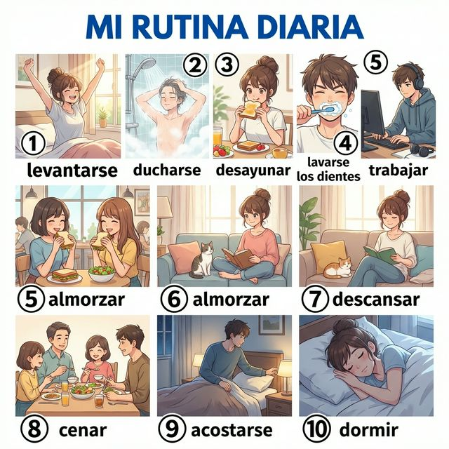
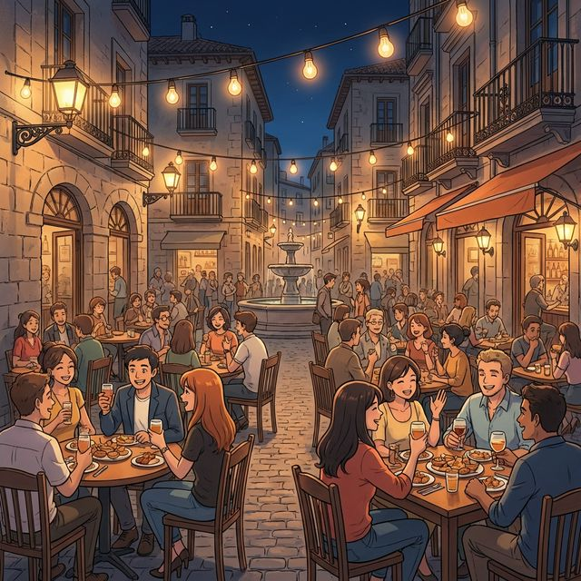

Cervantes: §11 일상생활, §15 신체 및 건강 기초
Mi día a día (나의 하루하루)
우리의 일상은 작은 습관들로 채워집니다. 아침에 일어나서 세수를 하고, 밥을 먹고, 잠자리에 들기까지의 과정을 스페인어로 표현할 수 있다면 여러분의 일상은 더욱 생생해질 것입니다. 이번 장에서는 '나를 씻기다(lavarse)'와 같이 나 자신에게 일어나는 행동을 나타내는 '재귀 동사(Reflexive Verbs)'를 배웁니다. 또한 한국과는 사뭇 다른 스페인 사람들의 독특한 하루 일과표와 기초적인 건강 관련 표현들도 함께 알아볼까요?
학습 목표
- 일상 일과, 시간 표현 및 신체 부위 기초 어휘 15개 이상 습득
- 재귀 동사(Levantarse, Ducharse, Acostarse 등)의 현재형 변화와 활용
- 하루 일과를 시간 순서대로 말하기 (Primero, Después, Luego, Por último)
- 스페인의 전형적인 식사 시간과 늦은 밤 문화 이해
우리의 아침부터 밤까지를 채우는 활동들입니다. 번호와 매칭되는 단어를 확인하며 필수 어휘들을 익혀보세요.

| # | Spanish | English Bridge | Korean Tip |
|---|---|---|---|
| 1 | levantarse | Levitate (get up) | 일어나다 |
| 2 | ducharse | Douche / Shower ✅ | 샤워하다 |
| 3 | desayunar | — | 아침 식사하다 |
| 4 | lavarse los dientes | Lave (wash) / Dental | 양치하다 |
| 5 | trabajar / estudiar | Work / Study ✅ | 일하다 / 공부하다 |
| 6 | almorzar / comer | — | 점심 식사하다 |
| 7 | descansar | — | 쉬다 |
| 8 | cenar | — | 저녁 식사하다 |
| 9 | acostarse | — | 잠자리에 들다 |
| 10 | dormir | Dormitory (sleep) | 자다 |
✅ 표시된 단어는 영어와 어원의 뿌리가 같은 'Cognates'입니다.
하루의 일과와 건강 상태를 말할 때 자주 사용하는 패턴입니다.
A. 일과 말하기 (La Rutina)
- Me levanto a las siete. (I get up at seven. / 나는 7시에 일어나요.)
- Me ducho por la mañana. (I shower in the morning. / 나는 아침에 샤워해요.)
- Salgo de casa a las ocho y media. (I leave home at eight-thirty. / 8시 반에 집을 나섭니다.)
- Vuelvo a casa tarde. (I return home late. / 집에 늦게 돌아와요.)
B. 건강 및 상태 표현 (Salud)
- ¿Cómo estás? (How are you? / 기분이 어때요? / 건강은 어떠세요?)
- Me siento bien / mal. (I feel good / bad. / 기분이 좋아요 / 안 좋아요.)
- Estoy cansado / cansada. (I am tired. / 피곤해요.)
- Tengo sueño. (I am sleepy. / 졸려요.)
나 자신에게 일어나는 행동을 표현하는 재귀 동사를 정복해 봅시다.
동사원형 끝에 -se가 붙은 동사들입니다. 주어가 하는 행동이 다시 주어 자신에게 돌아올 때 사용합니다.
구조: 재귀 대명사(me, te, se, nos, os, se) + 변형된 동사
| 인칭 | Levantars (일어나다) | 영어 매핑 |
|---|---|---|
| Yo | me levanto | I get (myself) up |
| Tú | te levantas | You get (yourself) up |
| Él/Ella/Ud. | se levanta | He/She/You get (him/her/yourself) up |
| Nosotros/as | nos levantamos | We get (ourselves) up |
| Vosotros/as | os levantáis | You all get (yourselves) up |
| Ellos/Ellas/Uds. | se levantan | They/You all get (themselves/yourselves) up |
순서 표현 부사 (Connectors):
- Primero (First) → Después / Luego (Then / After) → Por último (Finally)
스페인의 하루는 어떻게 흘러갈까요?

El horario en España es único. La mayoría de los españoles empiezan el día entre las 7:30 y las 8:30. El desayuno es ligero, a menudo solo un café. A las 11:00 hay una pausa para el café y un pequeño bocadillo. La comida más importante es el almuerzo (a las 14:00), que es largo y social.
Después del almuerzo, algunos todavía mantienen la tradición de la siesta, aunque es menos común en las grandes ciudades. Por la tarde, la gente pasea o se reúne en los bares para tomar algo. La cena es muy tarde, normalmente entre las 21:00 y las 22:30. Debido a este horario, la vida nocturna en España es muy vibrante; las calles están llenas de gente de todas las edades disfrutando del aire fresco de la noche. ¡Es un país que nunca duerme temprano!
[한국어 번역]
스페인의 시간표는 독특합니다. 대부분의 스페인 사람들은 아침 7시 반에서 8시 반 사이에 하루를 시작합니다. 아침 식사는 가볍게, 종종 커피 한 잔 정도로 끝냅니다. 오전 11시에는 커피와 작은 샌드위치를 먹는 휴식 시간이 있죠. 하루 중 가장 중요한 식사는 오후 2시에 먹는 점심(알무에르소)인데, 길고 사교적인 시간입니다.
점심 식사 후 일부는 여전히 낮잠(siesta) 전통을 유지하지만, 대도시에서는 덜 흔합니다. 오후에는 사람들이 산책하거나 바(bar)에 모여 음료를 마십니다. 저녁 식사는 매우 늦어서, 보통 밤 9시에서 10시 반 사이에 먹습니다. 이러한 시간표 덕분에 스페인의 밤문화는 매우 활기찹니다. 밤의 신선한 공기를 즐기며 거리는 모든 연령대의 사람들로 가득 차죠. 스페인은 일찍 잠들지 않는 나라입니다!
A. Put the routine in order (일과를 시간 순서대로 나열하세요)
| Activity | Order (1-5) |
|---|---|
| a. Cenar con la familia | ( ) |
| b. Levantarse y ducharse | ( ) |
| c. Acostarse y dormir | ( ) |
| d. Trabajar o estudiar | ( ) |
| e. Almorzar con compañeros | ( ) |
B. 재귀 동사 변형 연습 (괄호 안의 주어에 맞게 변형하세요)
C. 번역 연습 (주어진 문장을 스페인어로 번역하세요)
Un día normal para Elena (엘레나의 평범한 하루)
¡Hola! Soy Elena y vivo en Madrid. Mi rutina es muy española. Primero, me levanto a las ocho y me ducho rápidamente. No desayuno mucho, solo un café con leche. Después, voy a la universidad en metro. Tengo clases hasta las 두 시(dos de la tarde). A esa hora, almuerzo con mis amigos en la cafetería. Estudiamos un poco por la tarde y luego voy al gimnasio. Vuelvo a casa a las ocho de la tarde. Ceno con mi familia a las diez de la noche. Por último, leo un libro y me acuesto a las doce. ¡Estoy cansada pero muy feliz!
Questions:
1. Elena는 아침에 무엇을 먹나요? (What does Elena have for breakfast?)
- ............................................................
2. Elena는 몇 시에 저녁을 먹나요? (What time does Elena have dinner?)
- ............................................................
[한국어 번역]
안녕하세요! 저는 엘레나이고 마드리드에 삽니다. 제 일과는 매우 스페인식이에요. 먼저, 8시에 일어나서 빨리 샤워를 합니다. 아침은 많이 먹지 않고, 카페라테 한 잔만 마셔요. 그 후, 지하철을 타고 대학교에 갑니다. 오후 2시까지 수업이 있어요. 그 시간에 친구들과 함께 카페테리아에서 점심을 먹습니다. 오후에는 공부를 좀 하고 체육관에 가요. 오후 8시에 집에 돌아옵니다. 밤 10시에 가족들과 저녁을 먹어요. 마지막으로 책을 읽고 자정에 잠자리에 듭니다. 피곤하지만 정말 행복해요!
¿Qué tal tu día? (오늘 하루 어땠어?)
Situación: Dos amigos, Marc y Sonia, hablan sobre sus rutinas diarias.
상황: 두 친구 마르크와 소니아가 서로의 일과에 대해 이야기합니다.
| Spanish | Korean |
|---|---|
| Marc: Hola Sonia, ¿cómo estás? Te veo cansada. | 마르크: 안녕 소니아, 어때? 피곤해 보이네. |
| Sonia: Sí, estoy muy cansada. Me levanto a las seis todos los días. | 소니아: 응, 정말 피곤해. 매일 6시에 일어나거든. |
| Marc: ¡Qué temprano! ¿Por qué? | 마르크: 진짜 빠르네! 왜? |
| Sonia: Trabajo en una oficina lejos de casa. Salgo a las siete de la mañana. | 소니아: 집에서 먼 사무실에서 일해. 아침 7시에 나가야 해. |
| Marc: Entiendo. ¿A qué hora vuelves a casa? | 마르크: 그렇구나. 집에 몇 시에 돌아와? |
| Sonia: Vuelvo a las ocho de la tarde. Ceno y me acuesto enseguida. | 소니아: 저녁 8시에 돌아와. 저녁 먹고 바로 자. |
| Marc: ¡Pobre Sonia! Los fines de semana tienes que descansar mucho. | 마르트: 가엾은 소니아! 주말에는 푹 쉬어야 해. |
이번 장의 핵심 내용을 복습해 보세요.
- [ ] 일상 일과와 관련된 단어 10개 이상을 알고 있나요?
- [ ] 재귀 동사의 변화와 재귀 대명사(me, te, se...)를 외웠나요?
- [ ] 시간 순서를 나타내는 부사(Primero, Luego...)를 사용할 수 있나요?
- [ ] 스페인의 늦은 저녁 식사 문화를 이해했나요?
¡Buen ritmo! 오늘 여러분은 삶의 가장 기본인 '일과'를 스페인어로 통제하는 법을 배웠습니다. 재귀 동사를 통해 나 자신의 행동을 설명할 수 있게 되었고, 스페인의 독특한 시간표를 통해 그들의 삶의 리듬을 이해하게 되었습니다. 언어는 습관입니다. 매일 조금씩 스페인어를 사용하는 습관이 여러분을 마스터로 이끌 것입니다. 다음 장에서는 우리의 몸과 마음을 돌보는 '가사, 건강 심화 및 증상 말하기(A2)' 섹션으로 이어가겠습니다. ¡Cuídate mucho! (몸조심하세요!)
6. Práctica - A. Put the routine in order
b - d - e - a - c
6. Práctica - B. 재귀 동사 변형 연습
1. me levanto / 2. te duchas / 3. nos acostamos / 4. se lava / 5. se levantan
6. Práctica - C. 번역 연습
1. Me levanto a las siete de la mañana.
2. ¿A qué hora te duchas? (또는 ¿Cuándo te duchas?)
3. Cenamos en casa.
4. Mi amigo está siempre cansado. (또는 Mi amigo siempre está cansado.)
5. Primero como, y después estudio.
7. Lectura Questions
1. 카페라테 한 잔 (Un café con leche).
2. 밤 10시 (A las diez de la noche).